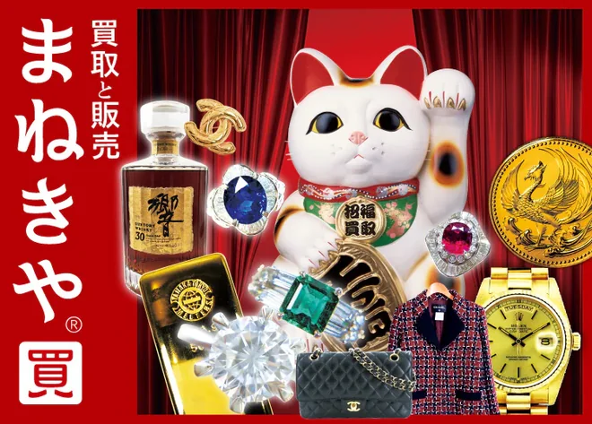
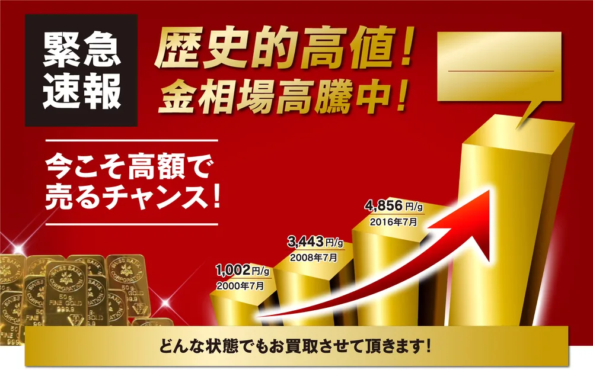
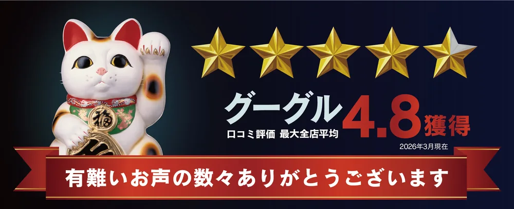

＋
買取額20%UP
キャンペーン中
出張・宅配
出張・宅配
X線分析装置ダイヤモンド
分析機器
マイクロスコープ
アドバイザー鑑定
に
いーふらん
STAYGOLD
高価買取
電話や
査定OK
高価買取
業界トップクラス
の
最寄り駅から
徒歩5分以内
▼本日の
—円/g
上記は
※まねきやでは9/30まで
＊更新日時：— ＊参考価格に
おすすめランキング1位は、業者間の
『まねきや』が選ばれている理由はこれ！

- 金の
買取手数料が 無料 ！その 分、 受取額にも 期待できる - 業者間の
取引価格 をもとに 査定。 金を 高く 売りたい人は 要チェック！ - 「これって
金？」と いう 品や、 査定が 難しい 金も相談OK！ - 「とりあえず
今の 値段だけ知りたい」でも OK！キャンセル料も 完全無料 - 今なら
電話申込で買取額最大20%UP！
↓ 売るか
金を売るならいつ？今の相場で一度チェック！
迷っているなら、
今の

歴史的な
自宅で
今、
- 早めの
査定で チャンスを 逃が さない - 査定は
無料。 まずは価値を 知るだけでも OK - 在宅で
査定できる サービスも
査定額を
1位 まねきや

『まねきや』は、
今なら
買取方法は
おすすめな
- 金や
プラチナを 高く 売りたい 人 - 他店で
断られた 貴金属を 売りたい 人 - 現金での
買取を 希望する 人
確認したい
- 20%UPは
電話申込限定 - 上限・対象品の
条件あり - 店舗は全国30店舗以上
| 運営会社 | 株式会社 水野 |
|---|---|
| 営業時間 | 9:00〜21:00 ※LINE査定は |
| 店舗数 | 全国30店舗以上 |
| 買取方法 | 店舗・出張・宅配 |
| 買取品目 | 金・貴金属／時計／宝石／ブランド品 など |


※ 店舗に
電話で
金を高く売りたい人注目！
手数料無料＋業者間取引価格で査定
手数
『まねきや』では、
手数料だけで、
さらに
業者間取引単価
＝毎日
一般向けよりも
↓
「これって金？」でもOK！査定が難しい品にも対応
『まねきや』では、
まねきやなら

- 高性能な
専門機器を 使って 正確に 査定 - 豊富な
商品知識に よる 確かな 目利き - レア金属を
抽出する オリジナルの 手法
各種専門機器も
実際にこんな金製品が売れています！

※ 公式サイト掲載の
もう
まねきやを使った人の口コミをチェック！

このような
以前
今回も
※ 公式サイト掲載の
2位 おたからや

- 全国47都道府県に1,980店舗以上を
展開 （※1） - 圧倒的な
買取規模に より 高価買取を 実現 - Googleの
口コミで4.8の 高評価を 獲得 （※2） - 買取手数料・
査定料が完全無料 - 査定士全員がプロの
鑑定士 の資格を 保有
『おたから
グローバルな
おすすめな
- 相場に
強い専門店で 査定して ほしい 人 - 買取が
初めての 人 - 大手の
安心感を 重視する 人 - 売れるか
分からない 物も まとめて 査定したい 人
確認したい
- 買取方法は
店舗・出張 - 営業時間は
店舗に より 異なる - 受付は
19時まで
| 運営会社 | 株式会社いーふらん |
|---|---|
| 営業時間 | 10時〜19時 |
| 店舗数 | 1,980店舗以上 |
| 買取方法 | 店舗・出張 |
| 買取品目 | 金・貴金属／時計／宝石／ブランド品 など |
↓ 今の
※1 2026年9月時点 ※2 2026年1月1日〜5月31日の
3位 ブラリバ

- 高額査定＆即日現金化が
可能 - 札幌から
福岡まで全国20店舗以上を 展開 - 全店舗が駅から
5分以内 の好立地 - 選べる
3つの 買取方法
『ブラリバ』は、
近くに
| 運営会社 | 株式会社STAYGOLD |
|---|---|
| 営業時間 | 電話受付 10:00〜20:00 店舗は ※LINE査定は |
| 店舗数 | 全国20店舗以上 |
| 買取方法 | 店頭・出張・宅配 |
| 買取品目 | 金・貴金属／ジュエリー／時計・ |
まとまった
知人から
※ 公式サイト掲載の
＼即日で
よくある質問
金か
はい。
切れた
できます。
刻印が
大丈夫です。
査定したら、
いいえ。
「最大20%UP」なら、
いいえ。
「K18」とは
金の
金メッキでも
メッキは
手数料は
まねきやは
身分証は
必要です。
遺品でも
相続した
未成年でも
18歳未満の
3社とも
問題ありません。
【迷ったらここ！】金を売るならまず「まねきや」をチェック！
金や
『まねきや』では、
迷っているなら、
今の査定額だけ
聞いてみましょう！
- 業者間相場で
査定するから 高額買取が 可能 - 金の
買取手数料が 無料 - 他店で
断られた 品も 買取OK
↓ 売るか
- 本ページは
プロモーションを 含みます - 本ページは、
公開されている 情報を もとに 編集部が 作成した 比較・紹介記事です - 掲載の
順位・総合評価・◎○などの 評価は 当編集部の 主観的な 比較であり、 買取価格の 優劣を 保証する ものではありません。 「最大20%UP」等の キャンペーンは 対象品・上限・併用等の 条件が あります - 掲載内容は2026年9月3日時点の
情報です。 最新の 条件は 各社公式サイトで ご確認ください - 実際の
査定額は、 当日の 金相場・重さ・ 純度・状態・ 商品に よって 変わります。 掲載の 買取実績・口コミは 特定の 事例であり、 同等の 金額や 対応を 保証する ものではありません - キャンペーンの
適用条件・上限額は 申込時に ご確認ください